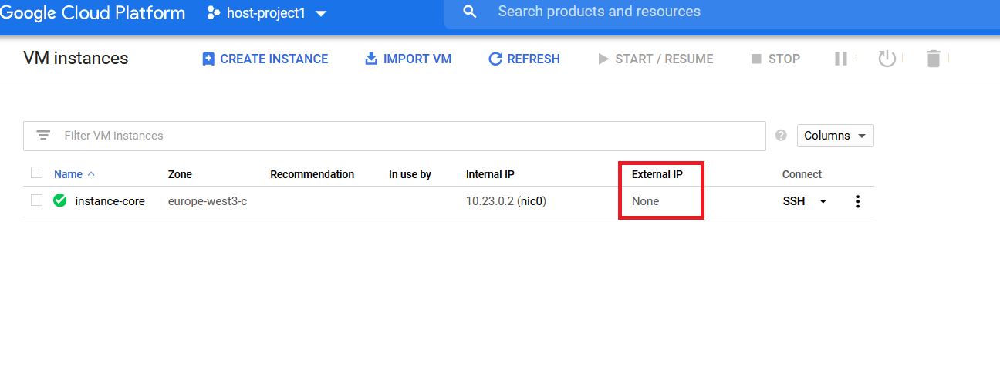
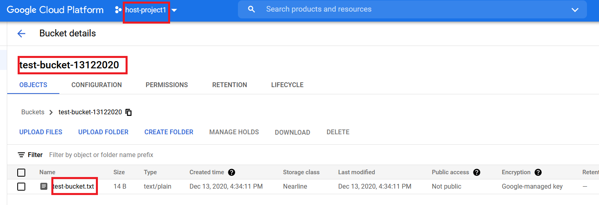
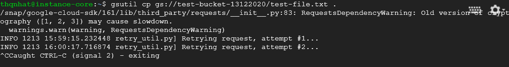
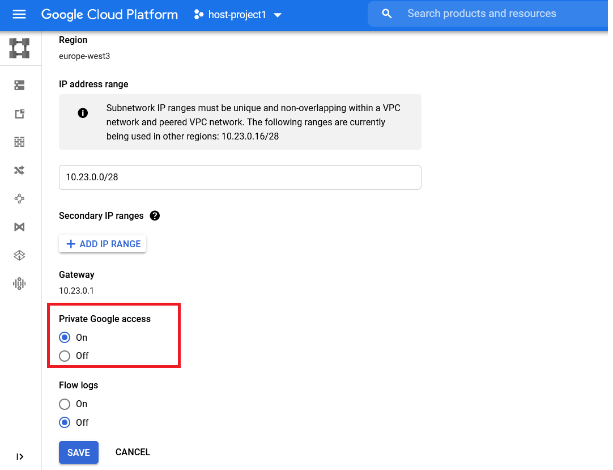
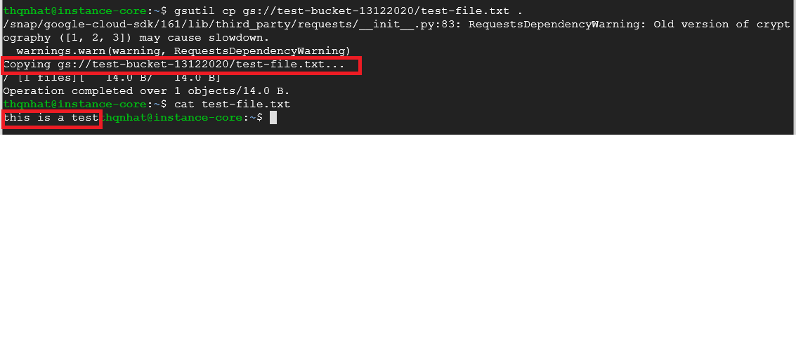
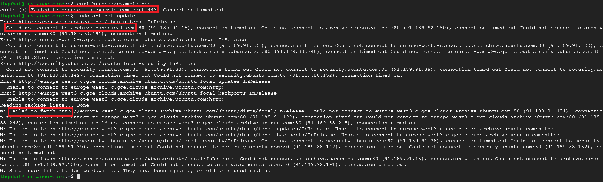
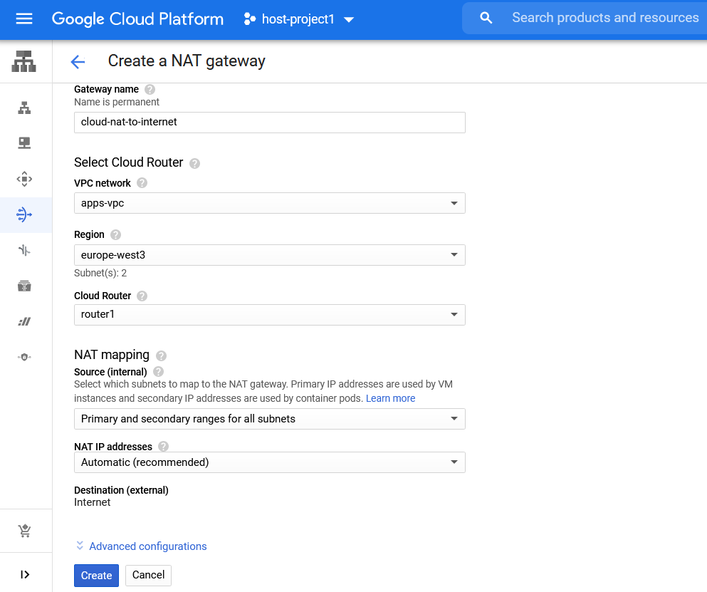
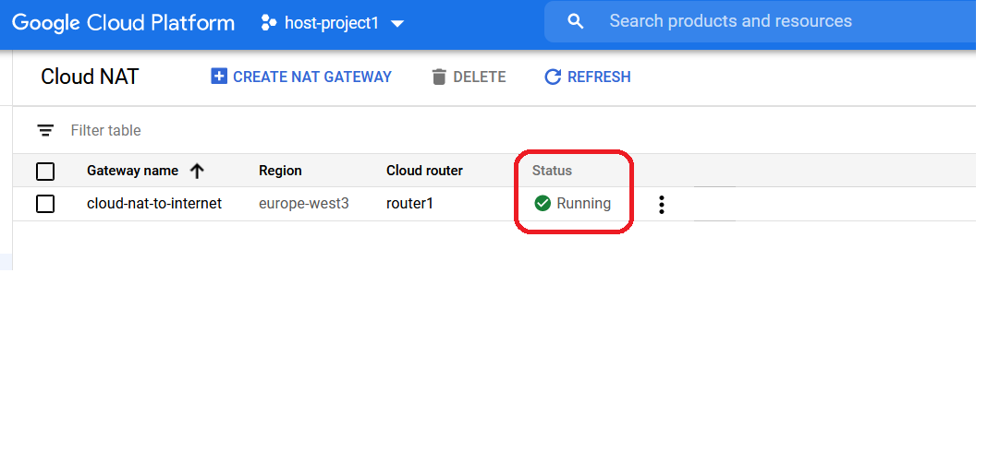
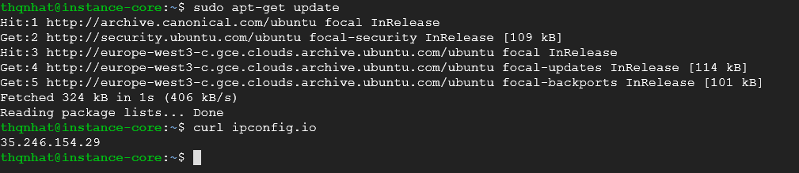
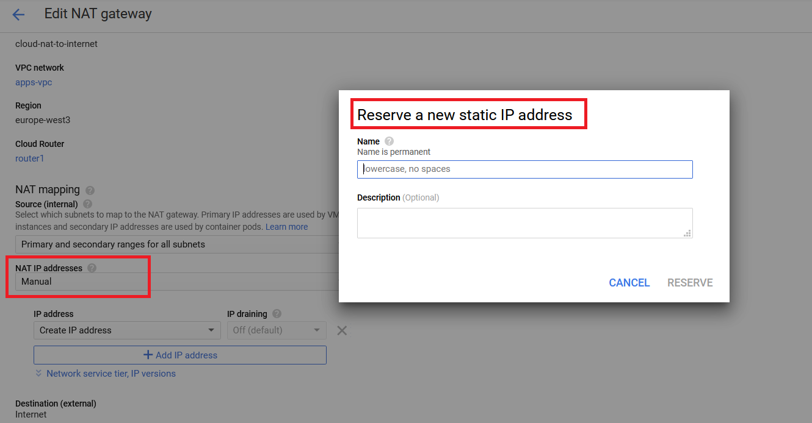

This is the third part of GCP’s series. In the first article, you have seen that a virtual machine needs to have an external IP to reach out to the services outside of the VPC in which it is deployed.
Topics to cover:
- Private Google Access
- Cloud NAT
Currently, the below virtual machine instance-core doesn’t have an external IP.

We will create a bucket in the project host-project1 named test-bucket and upload a test file test-file.txt into this bucket.

Then, we try to download this file from the vm instance-core with this gcloud command line:
gsutil cp gs://test-bucket-13122020/test-file.txt .

Unfortunately, the above command didn’t work because the vm cannot reach out to Google’s APIs and services without an external IP or the service Private Google Access is disabled. In that case, Private Google Access is a good option.
Enable Private Google Access
Private Google Access is enabled at the subnet level. When it is enabled, instances in the subnet that only have private IP addresses can send traffic to Google APIs and services through the default route (0.0.0.0/0) with a next hop to the default internet gateway.

Let’s run the test again:
gsutil cp gs://test-bucket-13122020/test-file.txt .

It should works!
Let’s say that our vm needs to go the Internet to download the patches, configurations, etc…
curl https://example.com
sudo apt-get update
Although the vm instance-host1 can now access certain Google APIs and services without an external IP address, the instance cannot access the internet for updates and patches.

In that case, you can think about Google Cloud NAT.
Google Cloud NAT
The Cloud NAT service allows Google Cloud VM instances that don’t have external IP addresses to connect to the internet.
Cloud NAT implements outbound NAT in conjunction with a default route to allow your instances to reach the internet.
It doesn’t implement inbound NAT. Hosts outside of your VPC network can respond only to established connections initiated by your instances; they cannot initiate their own connections to your instances using Cloud NAT.
Cloud NAT service is a specific VPC and is a specific region. Therefore, a Cloud NAT gateway created in one VPC network cannot provide NAT to VMs in other VPC networks connected by using VPC Network Peering, even if the VMs in peered networks are in the same region as the gateway.
To allow the vm instance-core to go to the Internet, let’s create a Cloud NAT gateway on the VPC apps-vpc in which the vm is deployed.
- Gateway name: cloud-nat-to-internet
- VPC Network: apps-vpc
- Region: must be the same region as instance-core (europe-west3)
- Cloud Router: create a new one if not exists
- NAT mapping - Source: you can select the subnet to NAT. By default, all subnets in VPC are selected.
- NAT IP addresses: Automatic

Let’s wait some minutes until the status of service becomes Running.

Now, let’s test the connection to the Internet:
sudo apt-get update
curl ipconfig.io
And that works fine!

You recognized also that the Cloud Nat assigned to us a public IP 35.246.154.29 allowing us to go the Internet without an external IP assigned on the vm.
This public IP is dynamic (changed and managed by Google) and it is the same IP for all virtual machines in the VPC.
If you would like to use a static IP address, you can change the option NAT IP Addresses from Automatic to Manual.

Happy practicing!